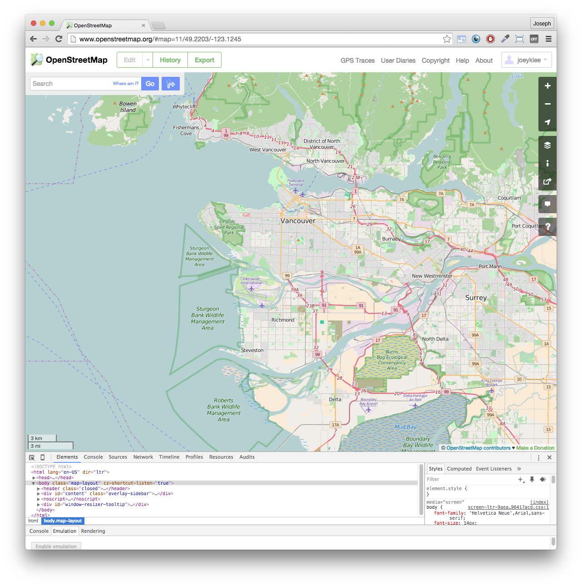
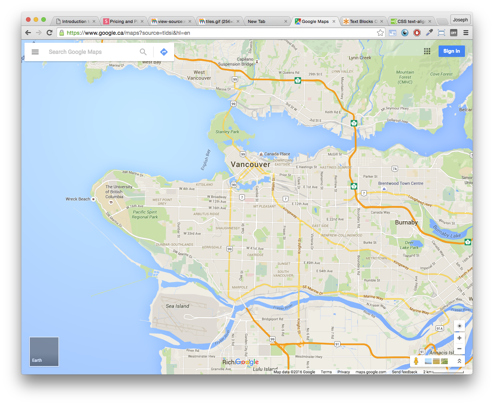

Intro to Web Maps with CartoDB
Animating and Interacting with Maps on the Web
Hello There
Today we're going to learn about web maps!
Don't worry if you've never done this before.
Maps are for everyone.
Big shoutout to Alan McConchie, Beth Schechter, and Lyzi Diamond - most of these slides are from their "Anatomy of a Web Map"
But before we start mapping, let's learn about what goes into making a web map
But before we start mapping, let's learn about what goes into making a web map
Web maps (as opposed to paper maps) are those that live in our browser like...
OpenStreetMap

GoogleMaps

Stamen

Google Earth is a type of Web Map, but this is a whole different kind of web map that we're not going to talk about today :)

How did web maps come to be?
First there were digital maps like those from ArcGIS

Although useful, desktop GIS tools are not user friendly :(
1996 - mapquest launches its webservice

Directions, online! Amazing! BUT it was painfully slow - each time a user zoomed or scrolled, the whole page had to refresh.
2005 - GoogleMaps develops the "map tile"

How we interact with and understand web maps today are based on "map tiles"
Let's take a second to understand how they work...
When we look at a modern web map we see something like this
Or this
However, what these "seemingly" seamless maps are actually composed of smaller images (tiles!) that are stiched together.

Yes, that's right, the map is composed of 100s to 1000s of little images (pngs or jpgs) that get sent right to your browser

This creates the wonderful illusion of a seamless map while also allowing them to load über quickly and efficiently.

What the tiling process does is take a map and create its own set of map tiles for each zoom level. The number of tiles increases exponentially as you zoom in.
Zoom level 0: one tile for the world.

Zoom level 1: 4 tiles for the world.

Zoom level 13:...

In general, web maps use the Mercator Projection which was designed for sailors and navigation.
But now web maps can support other projections (see: Free your maps from Web Mercator!
Now that we've learned the background behind modern web maps, let's look what compose a web map


In general when we show data on a map, we use geographic data. In a GIS we might typically use a shapefile but on the web we use kml, csv(with lat/lon coordinates) or geojson or some other web friendly formats.
Shapefiles or geojson: Spreadsheet + Polygons in geospace (oversimplification) but you get the idea...

CSV file: comma separated values - like a data table

So how do we actually make web maps then?
The Web stack: HTML, CSS, and Javascript


Ahhh Code!!!

No need to worry, for those who want to learn how to code, there's lots of great resources out there
However, if you're more keen on using an interface - we're in luck!
CartoDB
CartoDB is a cloudbased GIS and webmapping platform that takes all of that html, css, and javascript we saw above + SQL postgis database and makes it possible to make interactive web maps and animations online!
Data + Web maps!

CartoDB has free and paid plans and lots of tutorials online
Along with the web interface for making maps, CartoDB has a javascript library for taking your web maps to the next level.

There's no need to worry about map hosting, CartoDB takes care of all of that for you! You can embed your map on your page or link to it!
Now, let's take our first dive into CartoDB here
Today We're going to make an animated map of Vancouver's 3-1-1 phone calls
Special thanks to TerreWEB, UBC Geography, and the Mozilla Science Lab for all the support.
Thanks!
Questions, Comments?
Made with
- Reaveal.js - Try the online editor
- Reveal.js - Source code & documentation